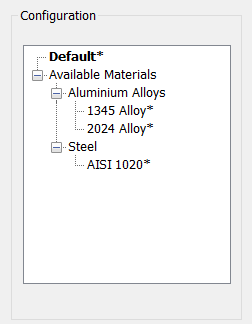

押し出し穴と曲げ部との最小距離を板厚で割った比率は、構成で設定された値より大きくなければなりません。
押し出し穴が曲げ部に近すぎる場合、曲げ加工中に変形が発生します。穴の端から内側曲げ半径の開始位置までの距離が板厚の少なくとも4倍以上であれば、変形は最小限に抑えられます。また、適切な距離を確保することで、パンチとダイが押し出し穴を成形するために十分な隙間を確保できます。
一般的なガイドラインとして、押し出し穴と曲げ部との最小距離は、板厚の少なくとも4倍以上であるべきです。
DFMPro は押し出し穴フィーチャーを識別し、押し出し穴と曲げ部との最小距離を板厚で割った比率を算出します。この実際の比率は、構成で設定された比率と照合されて検証されます。
ユーザーは、デフォルトで構成されている比率を編集することができます。
ルールUIでは、材料の一覧が Map Material から読み込まれ、ユーザーは材料およびその値を構成することができます。
材料とその値を構成した後、ユーザーは Ctrl+M コマンドを使用して、ルールUI内で材料グループおよびグレードごとに構成された材料の一覧をフィルタ表示できます。同じキー（Ctrl+M）を使用してフィルタを解除することができます。

ここで、
t = 板厚
D = 押し出し穴と曲げ部との最小距離